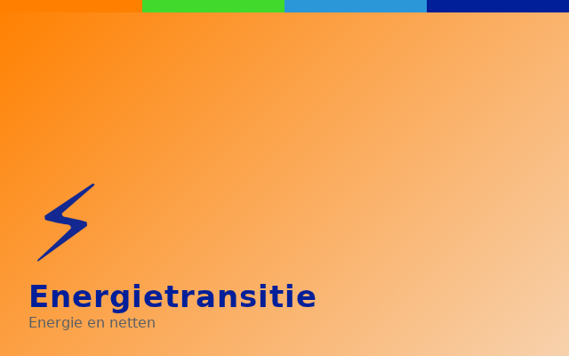
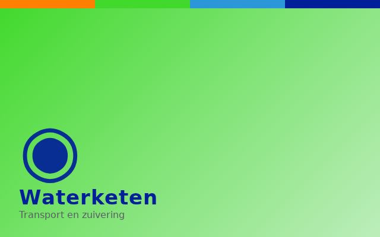
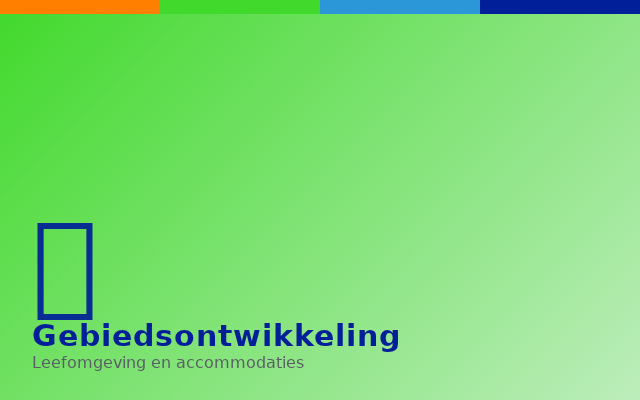

Projecten
Op deze pagina een selectie van de projecten waaraan DIESPE heeft bijgedragen — van watersysteem- en energieprojecten tot waterveiligheid en gebiedsontwikkeling. Klik op een tegel voor meer informatie.

Vispassage Doesburg
Een van de grootse vispassage van Nederland, vergoten belevingswaarde, recreatie, aanleg zwaluwwand, herinrichting omgeving | …
- Opdrachtgever: Waterschap Rijn en IJssel |
- Projectfasen: Verkenning Planuitwerking Realisatie |
- Rol: Integraal projectmanager |
- Contractvorm: Bouwteam |

Windpark Duiven te Duiven
Ontwikkelen van windpark Duiven bestaande uit 2 windturbines met tip hoogte van 200 meter. | …
- Opdrachtgever: Waterschap Rijn en IJssel |
- Projectfasen: Planuitwerking Realisatie |
- Rol: IPM projectmanager |
- Contractvorm: Fidic Yellow book |

Transportsystemen Lochem-Zutphen
Realisatie van 25 kilometer riool- en industrieelafvalwater transportleidingen, twee nieuwe gemalen en ombouw van drie gemalen | …
- Opdrachtgever: Waterschap Rijn en IJssel |
- Projectfasen: Verkenning Planuitwerking Realisatie |
- Rol: IPM projectmanager |
- Contractvorm: Design en Construct |

Herinrichting Groenlose slinge deel RWZI-Winterswijk – N18
KRW, beekherstel, waterbodem verhoging, vispasseerbaar maken, profiel aanpassing, vergoten biodiversiteit vergoten…
- Opdrachtgever: Waterschap Rijn en IJssel
- Projectfasen: Verkenning
- Rol: IPM projectmanager
- Contractvorm: Portfolio/ raamovereenkomst
Peilbesluit Mastenbroek inclusief Koekkoekspolder
Nieuw peil besluit voor veenweide gebied voor de oudste rationele polder van Nederland | …
- Opdrachtgever: Waterschap Drents Overijsselse Delta |
- Projectfasen: Verkenningsfase |
- Rol: IPM technisch manager |
- Contractvorm: nader te bepalen |
Natuurlijke nazuivering RWZI Winterswijk
KRW, waterkwaliteit verbetering door middel van natuurlijke nazuivering van effluent RWZI Winterswijk…
- Opdrachtgever: Waterschap Rijn en IJssel
- Projectfasen: Verkenning
- Rol: IPM projectmanager
- Contractvorm: Portfolio/ raamovereenkomst

Netverbetering 10-20 kV Wijchen
Realisatie van middenspanningsverbindingen en middenspanningstations projectomvang €25 milj. | …
- Opdrachtgever: Liander |
- Projectfasen: Planuitwerking Realisatie start Q1 2025 |
- Rol: IPM projectmanager |
- Contractvorm: Bouwteam Uitvoeringsovereenkomst ‘RAW’ UAV 2012 |

Afvalwatertransportsysteem Groessen -Duiven
Aanleg afvalwatertransportleiding, saneren overstort…
- Opdrachtgever: Waterschap Rijn en IJssel
- Projectfasen: Verkenning Planuitwerking Realisatie
- Rol: Integraal projectleider
- Contractvorm: RAW
Renovatie gemaal Bevermeer te Angerlo
Opwaardering en renovatie, nieuwe betonnen slakhuispompen, elektrificatie, renovatie afsluit middelen…
- Opdrachtgever: Waterschap Rijn en IJssel
- Projectfasen: Planuitwerking Realisatie
- Rol: Projectleider civiel
- Contractvorm: RAW

Hoogwaterkering Tuindorp nabij Lobith
Onderzoek na hoogwaterbeschermingsopgave waterkering Tuindorp…
- Opdrachtgever: Waterschap Rijn en IJssel
- Projectfasen: Verkenning
- Rol: IPM projectmanager
- Contractvorm: Advies opdracht
Netverbetering 10-20 kV Bemmel
Realisatie van middenspanningsverbindingen en middenspanningstations projectomvang €25 milj.…
- Opdrachtgever: Liander
- Projectfasen: Planuitwerking Realisatie Q1 2025
- Rol: IPM projectmanager
- Contractvorm: Bouwteam Uitvoeringsovereenkomst ‘RAW’ UAV 2012
Integraalwatersysteem project restopgave Oude Diep, gebied tussen Fluitenberg - Hoogeveen
Pre-verkenning voor project aanpak KRW en Nationaal Bestuursakkoord Water (NBW)…
- Opdrachtgever: Waterschap Drents Overijsselse Delta
- Projectfasen: Pre-verkenningsfase
- Rol: IPM technisch manager
- Contractvorm: nader te bepalen
Renovatie bedrijfsgebouw RWZI Lichtenvoorde
Renovatie en uitbreiding van bedrijfsgebouw van RWZI Lichtenvoorde…
- Opdrachtgever: Waterschap Rijn en IJssel
- Projectfasen: Verkenning Planuitwerking Realisatie
- Rol: IPM projectmanager
- Contractvorm: Design en Construct
Waterretentie Sibbinkweg te Winterswijk
Aanleg waterretentie tbv stedelijk water aan de Sibbinkweg te Winterswijk inclusief aanpassingen in aan- en afvoerend watersysteem…
- Opdrachtgever: Waterschap Rijn en IJssel
- Projectfasen: Verkenning Planuitwerking Realisatie
- Rol: Integraal projectmanager
- Contractvorm: RAW
Beurzerbeek bovenlopen deel Walienseweg - Greuneweg te Winterswijk
KRW, beekherstel, waterbodem verhoging, vispasseerbaar maken, profiel aanpassing, vergoten biodiversiteit vergoten | …
- Opdrachtgever: Waterschap Rijn en IJssel |
- Projectfasen: Verkenning |
- Rol: IPM projectmanager |
- Contractvorm: Portfolio/ raamovereenkomst |
Windpark IJsselwind te Zutphen
Ontwikkelen van windpark IJsselwind bestaande uit 3 windturbines. | …
- Opdrachtgever: Waterschap Rijn en IJssel / energiecoöperatie IJsselwind |
- Projectfasen: Verkenning Planuitwerking (on hold, wachtende op uitspraak Raad van State) |
- Rol: IPM projectmanager |
- Contractvorm: - |
Aanleg Waterretentie SKB te Winterswijk
Aanleg waterretentie tbv stedelijk water nabij Streekziekenhuis Koning Beatrix te Winterswijk inclusief aanpassingen in aan- en afvoerend watersysteem…
- Opdrachtgever: Waterschap Rijn en IJssel
- Projectfasen: Verkenning Planuitwerking Realisatie
- Rol: Integraal projectmanager
- Contractvorm: RAW
Berenschotbrug – stuw Miste te Winterswijk
Beekherstel, waterbodem verhoging, vispasseerbaar maken, profiel aanpassing, vergoten biodiversiteit vergoten…
- Opdrachtgever: Waterschap Rijn en IJssel
- Projectfasen: Verkenning Planuitwerking
- Rol: IPM projectmanager
- Contractvorm: Portfolio/ raamovereenkomst
Netverbetering 10-20 kV Duiven en Westervoort
Realisatie van middenspanningsverbindingen en middenspanningstations, projectomvang €10 milj.…
- Opdrachtgever: Liander
- Projectfasen: Uitvoeringsontwerp Realisatie
- Rol: IPM projectmanager
- Contractvorm: Bouwteam Uitvoeringsovereenkomst ‘RAW’ UAV 2012
Ringleiding Winterswijk West
Realisatie van afvalwater transportleidingen en 2 rioolwatergemalen | …
- Opdrachtgever: Waterschap Rijn en IJssel |
- Projectfasen: Verkenning Planuitwerking Realisatie |
- Rol: Integraal projectmanager |
- Contractvorm: Design en Construct |
Afvalwatertransportsysteem Gendringen - Ulft
Aanleg afvalwatertransportleiding en 3 gemalen…
- Opdrachtgever: Waterschap Rijn en IJssel
- Projectfasen: Verkenning Planuitwerking Realisatie
- Rol: Integraal projectleider
- Contractvorm: RAW
Industrieelwatertransportsysteem Borculo-Lochem
Realisatie van industrieel afvalwatertransportsysteem en bouw afvalwatergemaal…
- Opdrachtgever: Waterschap Rijn en IJssel
- Projectfasen: Verkenning Planuitwerking Realisatie
- Rol: Integraal projectmanager
- Contractvorm: Design en Construct
Osinkbeek, Bemersbeek en Schippersbeek te Winterswijk
Beekherstel, water vasthouden, vergoten biodiversiteit vergoten…
- Opdrachtgever: Waterschap Rijn en IJssel
- Projectfasen: Verkenning
- Rol: IPM projectmanager
- Contractvorm: Portfolio/ raamovereenkomst
Integraal meetnet watersysteem
Gebied dekkend meetnet bestaande uit 55 debietmeet locaties in openwater met telemetrie…
- Opdrachtgever: Waterschap Rijn en IJssel
- Projectfasen: Verkenning Planuitwerking Realisatie
- Rol: Integraal projectleider
- Contractvorm: Design en Construct
Integrale herinrichting Wehmerbeek deel Singelweg – Burgermeester van Nispenstraat te Winterswijk
Herinrichting beek, vispasseerbaar maken, watervast houden, vergroten biodiversiteit, recreatie, fietsverbinding | …
- Opdrachtgever: Waterschap Rijn en IJssel / Gemeente Winterswijk |
- Projectfasen: Planuitwerking Realisatie |
- Rol: Integraal projectmanager |
- Contractvorm: Design en Construct |
Netverbetering 10-20 kV Affferden
Realisatie van middenspanningsverbindingen en middenspanningstations projectomvang €24 milj.…
- Opdrachtgever: Liander
- Projectfasen: Planuitwerking Realisatie start Q1 2026
- Rol: IPM projectmanager
- Contractvorm: Bouwteam Uitvoeringsovereenkomst ‘RAW’ UAV 2012
Renovatie rioolgemalen
Renovatie van diverse rioolgemalen w.o. Duiven, Didam, Westervoort, etc…
- Opdrachtgever: Waterschap Rijn en IJssel
- Projectfasen: Planuitwerking Realisatie
- Rol: Integraal projectleider / projectleider civiel
- Contractvorm: RAW
Renovatie verzamelput transportriool Velp-Arnhem in uiterwaarde te Velp
Amoveren en nieuwbouw van verbindingsput tussen hoofdafvoer Arnhem-noord en Velp en zinkers onder IJssel | …
- Opdrachtgever: Waterschap Rijn en IJssel |
- Projectfasen: Verkenning Planuitwerking Realisatie |
- Rol: Integraal projectmanager |
- Contractvorm: Bouwteam |
Herinrichting Whemerbeek en aanleg retentie Eelink deel Bataafseweg – Eelinkstraat te Winterswijk
Integrale herinrichting beek, vispasseerbaar maken, watervast houden, vergroten biodiversiteit, recreatie | …
- Opdrachtgever: Waterschap Rijn en IJssel / Gemeente Winterswijk |
- Projectfasen: Planuitwerking Realisatie |
- Rol: Integraal projectmanager |
- Contractvorm: RAW |
Vispassage Erfkamelingschap
Aanleg technische vispassage en verbeteren peilbeheer Rijnstrangen gebied…
- Opdrachtgever: Waterschap Rijn en IJssel
- Projectfasen: Verkenning Planuitwerking Realisatie
- Rol: Integraal projectmanager
- Contractvorm: Bouwteam

FCCL BMX-accommodatie te Lichtenvoorde
Realisatie van een nieuwe BMX-accommodatie voor de vereniging Fietscrossclub Lichtenvoorde.…
- Opdrachtgever: Fietscrossclub Lichtenvoorde / gemeente Oost Gelre
- Projectfasen: Verkenning / Planuitwerking / Realisatie
- Rol: Integraal projectmanager (vrijwilligerswerk)
- Contractvorm: Eigen beheer
Verwijderen AC-transportsysteem Lochem-Zutphen
Verwijderen van Asbestcement 800mm transportleiding uit Berkel dal tussen Lochem en Zutphen…
- Opdrachtgever: Waterschap Rijn en IJssel
- Projectfasen: Verkenning Planuitwerking Realisatie
- Rol: IPM projectmanager
- Contractvorm: Design en Construct
Afvalwatertransportsysteem Borculo-Haarlo
Realisatie van afvalwatertransportsysteem en bouw rioolwater gemaal…
- Opdrachtgever: Waterschap Rijn en IJssel
- Projectfasen: Verkenning Planuitwerking Realisatie
- Rol: Integraal projectmanager
- Contractvorm: Design en Construct
Waardevolle kleine Wateren, Bovenlopen Loolee
KRW inrichtingsmaatregelen in de waardevolle kleine wateren bovenlopen Loolee: Lemselerbeek, Weerseloschebeek, Rossumerbeek, Baasdammerbeek | …
- Opdrachtgever: Waterschap Vechtstromen |
- Projectfasen: Ontwerpfase |
- Rol: Senior adviseur watersysteem / technisch manager |
- Contractvorm: nader te bepalen |
Integraalwatersysteem project Wold Aa, gebied tussen Ruinen en Meppel
Verkenning voor programma aanpak klimaat robuust watersysteem 2100, KRW en Nationaal Bestuursakkoord Water (NBW) in samenhang met project Oude Vaart | …
- Opdrachtgever: Waterschap Drents Overijsselse Delta |
- Projectfasen: Verkenningsfase |
- Rol: IPM technisch manager |
- Contractvorm: nader te bepalen |
Netverbetering 10-20 kV Gendt
Realisatie van middenspanningsverbindingen en middenspanningstations projectomvang €15 milj.…
- Opdrachtgever: Liander
- Projectfasen: Planuitwerking Realisatie start Q1 2025
- Rol: IPM projectmanager
- Contractvorm: Bouwteam Uitvoeringsovereenkomst ‘RAW’ UAV 2012
Integraalwatersysteem project Wapserveensche Aa, gebied tussen Diever, Wapse en Steenwijk
KRW, 2,5 km 7 meter brede natuurvriendelijke oever, vier vispassages, baggerwerkzaamheden, herstel oeverbescherming.…
- Opdrachtgever: Waterschap Drents Overijsselse Delta
- Projectfasen: Planuitwerking
- Rol: IPM technisch manager
- Contractvorm: Samenwerkingsovereenkomst ingenieursdiensten
Integraalwatersysteem project Boerenveensche plassen, gebied tussen Pesse, Gijsselte en Ruinen
Verbetering van watersysteem tbv Nationaal Bestuursakkoord Water (NBW) ontwerp en aanleg van waterbergingen, automatische-, stuwen, duikers.…
- Opdrachtgever: Waterschap Drents Overijsselse Delta
- Projectfasen: Planuitwerking / Realisatie
- Rol: IPM technisch manager
- Contractvorm: Samenwerkingsovereenkomst ingenieursdiensten / RAW bestek t.b.v. realisatie
Integraalwatersysteem project Domeinweg, omgeving Fluitenberg
Verbetering van watersysteem tbv Nationaal Bestuursakkoord Water (NBW) ontwerp en aanleg van waterbergingen, automatische-, stuwen, duikers. | …
- Opdrachtgever: Waterschap Drents Overijsselse Delta |
- Projectfasen: Planuitwerking / Realisatie |
- Rol: IPM technisch manager |
- Contractvorm: Samenwerkingsovereenkomst ingenieursdiensten / RAW bestek t.b.v. realisatie |
Renovatie stuw Doesburg
Groot onderhoud aan bouwkundig en civiel onderdelen van stuw Doesburg…
- Opdrachtgever: Waterschap Rijn en IJssel
- Projectfasen: Planuitwerking Realisatie
- Rol: Integraal projectmanager
- Contractvorm: Design en Construct
Optimalisatie watersysteem Lichtenvoorde
Aanleg wateropvang en aanpassing watersysteem ter voorkoming wateroverlast in stedelijk gebied met uitgebreid burgerparticipatie proces | …
- Opdrachtgever: Waterschap Rijn en IJssel / Gemeente Oost Gelre |
- Projectfasen: Verkenning Planuitwerking |
- Rol: Integraal projectmanager |
- Contractvorm: RAW |
Verbeteren watersysteem Arnhem Presikhaaf en Velp
Verbeteren watersysteem, verminderen wateroverlast, herinrichting watersysteem, vervangen duikers, bouw (tussen-) gemalen, nieuwe duiker onder A348…
- Opdrachtgever: Waterschap Rijn en IJssel
- Projectfasen: Verkenning Planuitwerking Realisatie
- Rol: Integraal projectleider
- Contractvorm: RAW
Integraalwatersysteem project Oude Vaart, gebied tussen Ruinen en Meppel
Verkenning voor programma aanpak klimaat robuust watersysteem 2100, KRW en Nationaal Bestuursakkoord Water (NBW) in samenhang met project Wold Aa | …
- Opdrachtgever: Waterschap Drents Overijsselse Delta |
- Projectfasen: Verkenningsfase |
- Rol: IPM technisch manager |
- Contractvorm: nader te bepalen |
Integraalwatersysteem project Ruiner AA, gebied tussen Spier, Wijster en Pesse
Verbetering van watersysteem tbv Nationaal Bestuursakkoord Water (NBW) ontwerp en aanleg van waterbergingen, automatische-, stuwen, duikers.…
- Opdrachtgever: Waterschap Drents Overijsselse Delta
- Projectfasen: Planuitwerking / Realisatie
- Rol: IPM technisch manager
- Contractvorm: Samenwerkingsovereenkomst ingenieursdiensten / RAW bestek t.b.v. realisatie
Dijkverbetering Westervoortsewijk fase 1, deel tussen Billitonkade en John Frostbrug te Arnhem
Aanleg ‘harde’ hoogwaterkering in stedelijk gebied | …
- Opdrachtgever: Waterschap Rijn en IJssel |
- Projectfasen: Realisatie |
- Rol: Projectleider civiel |
- Contractvorm: RAW |
Klik op een tegel om deze om te draaien en de projectgegevens te bekijken.